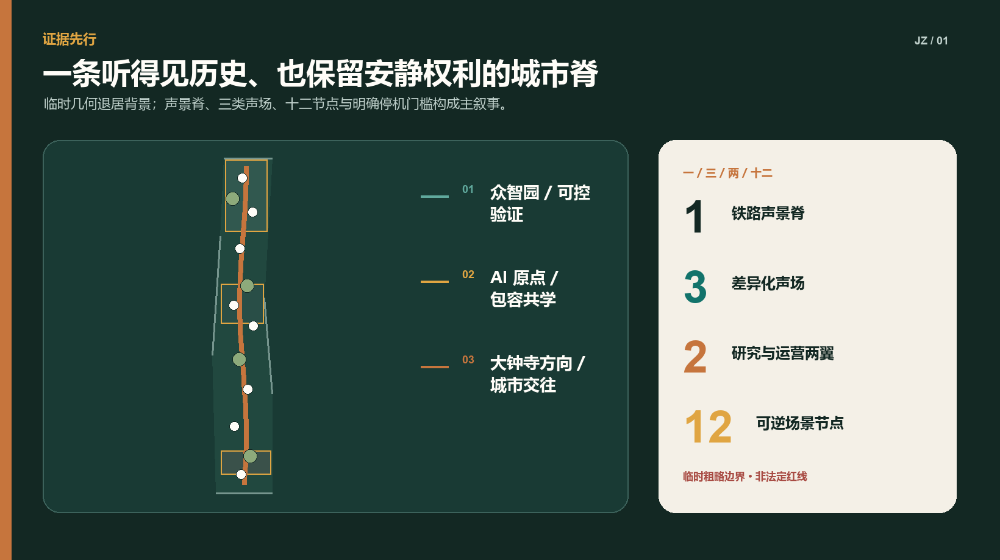
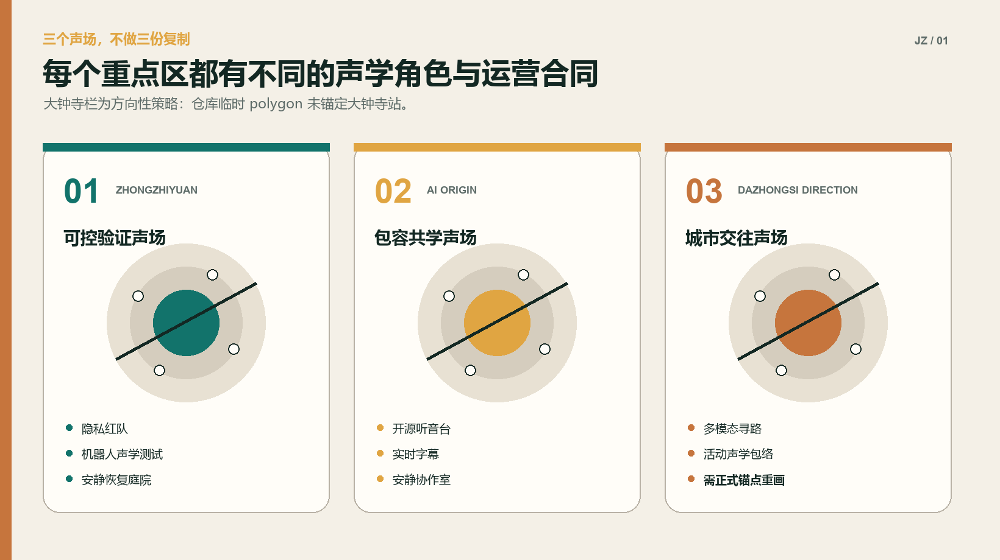
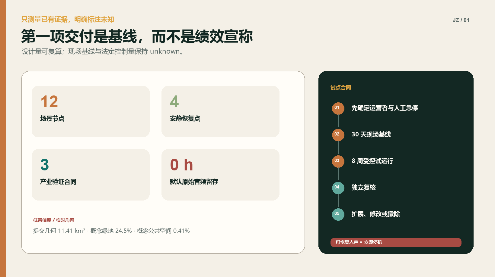
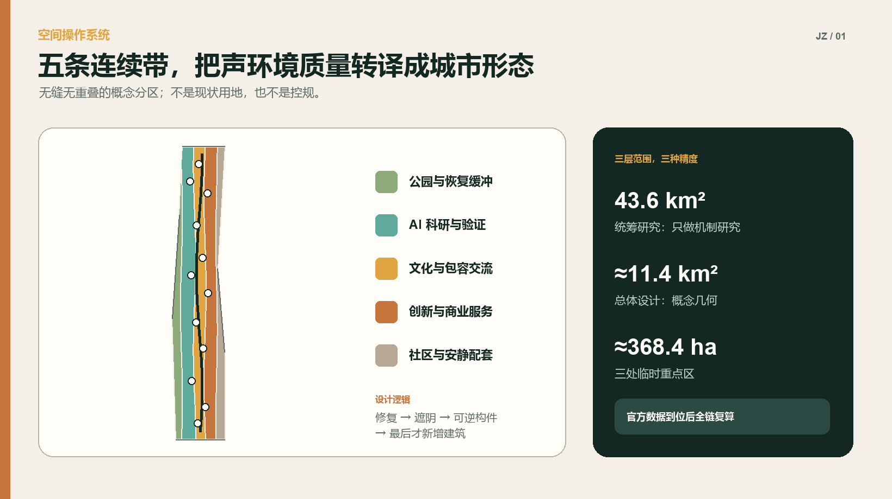

可控验证声场
隐私红队 · 机器人测试 · 安静恢复庭院
让创新带既听得见历史，也容得下安静。

验证、共学与城市交往共用一条脊，却拥有不同的规则、用户与停止条件。
隐私红队 · 机器人测试 · 安静恢复庭院
开源听音台 · 实时字幕 · 安静协作室
仅方向性表达 · 需正式站点锚点

AI 只建议、汇总或模拟；具名岗位负责审批、急停与最终责任。
试点不是演示，而是一份写清资源、测量窗口、成功门槛、停止条件和人工兜底的运营合同。
可恢复人声、未告知采集、原始数据外发、碰撞、急停失效或应急通道信息冲突。
保全必要日志并交独立复核；受影响功能不得自动重启。
静态导视、触觉指引和人工服务在 AI 关闭后继续运行。

提交的设计几何可复算；现场条件、法定控制与本地认同不被虚构。
12 个节点、4 个安静恢复点、3 个验证合同、4 季运营循环，以及默认原始音频留存 0 小时的政策目标。
现状声学基线、服务人数、法定容积率/高度/密度、道路红线、市政、权属、文保与精确站城关系。
默认不录人声、不做声纹、身份或情绪推断；公共数据只描述环境与治理，不发布个人轨迹或声音。
保持 canonical provisional geometry 不变。PROV-KEY-003 未锚定大钟寺站；正式数据到位后全链复算。
